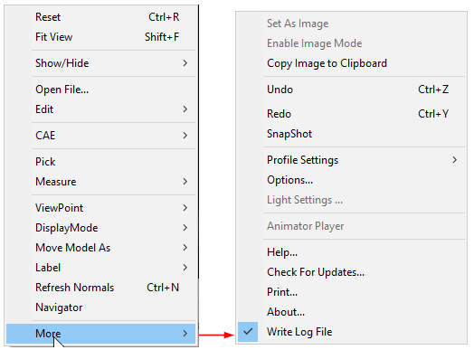

Undo/Redo
VCollab Presenter creates user defined views and named views into a list. VCollab uses this list to redo and undo operations. VCollab is able to redo and undo 100 operations at maximum.
Undo and Redo options in the Context Menu

There are three operations
- Push a view into the view array. The last pushed view is the current view in the array. (Shortcut key - Ctrl + W)
- Undo operation. (Shortcut key - Ctrl +Z).
- Redo operation. (Shortcut key - Ctrl +Y).